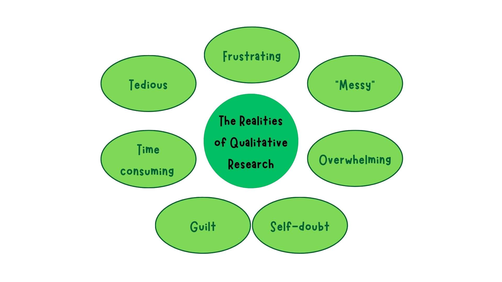
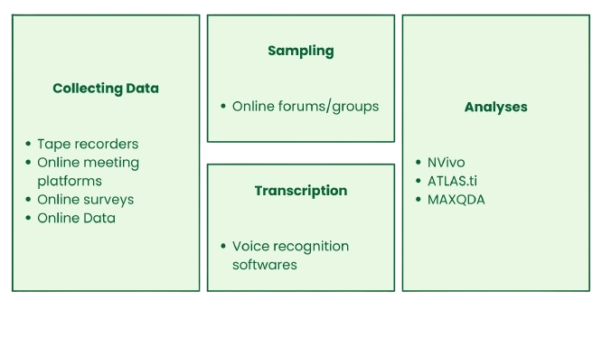
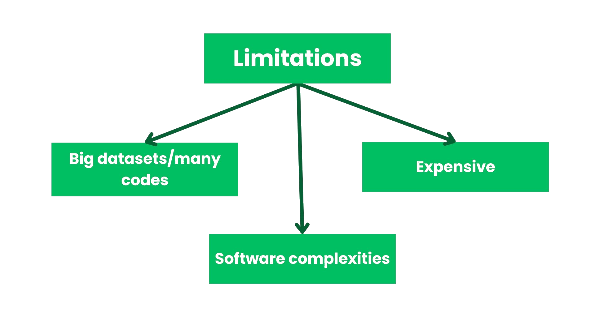
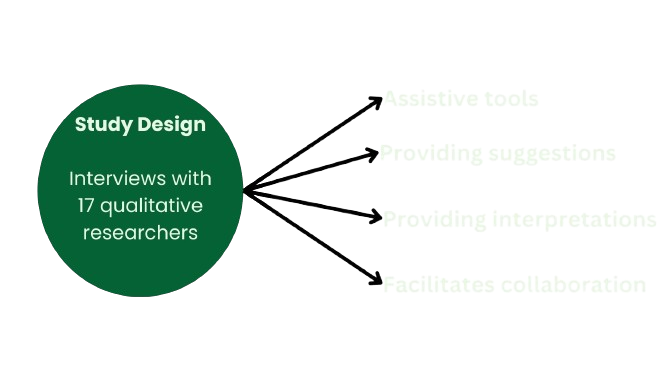
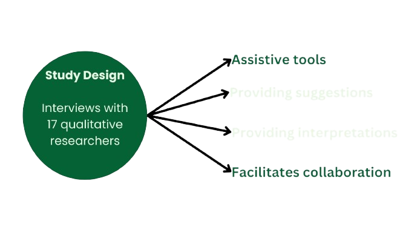
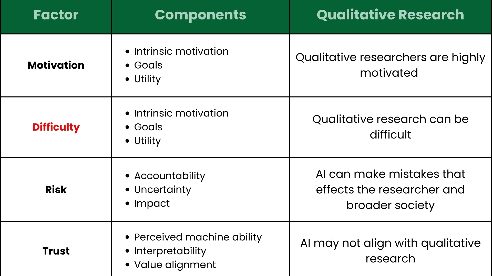
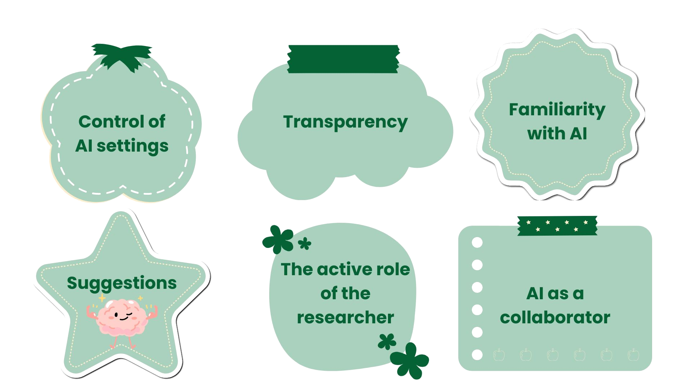
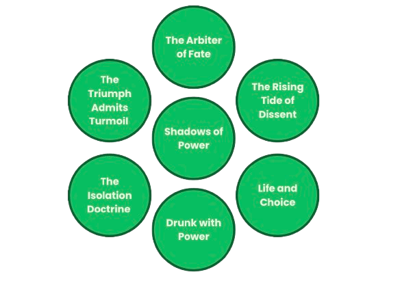

Role of AI in Qualitative Analysis
VICTORIA & ARJUN
Your
Opinion
Matters
How do you feel about AI in Qualitative Analysis?
The
Reality
Realities of Qualitative Research
- Goals of Qualitative Research
- The holistic study of human behaviour from the POV of the individual (Vishnevsky & Beanlands, 2004)
- Answer questions outside the scope of quantitative inquiry
- Drawback of qualitative research (Jiang et al., 2021)
- 
Examples of how researchers use technology currently?
- Visual
- 
- Collecting Data
- Tape recorders
- Novel survey techniques
- Zoom recording
- Online data
- Sampling
- Word of mouth
- Online groups
- Transcription
- Voice recognition softwares
- Analyses
- NVivo
- ATLAS.ti
- MAXQDA
Limitations of Existing Technology
- Limitations of existing technology (Jiang et al., 2021; Palys and Atchison, 2012):
-

- Working with large datasets
- Software complexities
- Expensive
-
The Magical Software
- Study Design(Interviews with 17 qualitative researchers)
-
 
-
What
is
AI?
:max_bytes(150000):strip_icc()/GettyImages-1273872391-c0c1745abc8749b1a176afdfeee4fe00.jpg)

What is AI?
“"The future of artificial intelligence is not about man versus machine, but rather about man with machine.” - John McCarthy
| Feature | Description | Key Benefits |
|---|---|---|
| Machine Learning | AI systems can learn and improve from experience without being explicitly programmed. |
|
| Natural Language Processing (NLP) | Allows AI to understand and generate human language, making it useful for analyzing textual data. |
|
| Pattern Recognition | AI excels at identifying patterns in large datasets, including qualitative data like interviews or open-ended survey responses. |
|
History
of
AI

Brief History of AI for Qualitative Analysis
- 1. Early Beginnings of AI (1950s–1970s)
- Initial AI Development: Early AI systems were rule-based, focusing on symbolic logic and reasoning. These systems operated using if-then rules to mimic human reasoning.
- Qualitative Research: These systems were not suitable for analyzing unstructured data like text, interviews, or narratives since they lacked flexibility, requiring explicit programming for every possible scenario.
- Key Milestone: Turing Test (1950): Proposed by Alan Turing to assess a machine's ability to exhibit intelligent behavior indistinguishable from a human.
- 2. Emergence of Machine Learning (1980s–1990s)
- Shift from Rule-Based to Learning-Based Systems: Machine Learning (ML) marked a major shift. Instead of relying on pre-defined rules, these systems learned patterns from data.
- Qualitative data, often messy and unstructured, benefited from ML’s ability to find hidden patterns without manual intervention.
- Application in Qualitative Analysis:
- Text Mining: Early text mining applications used ML to extract patterns and themes from qualitative data.
- Qualitative Data Software: Tools like NVivo and ATLAS.ti assisted researchers in coding and categorizing qualitative data.
- These tools automate some aspects of coding (labeling sections of text) but still rely heavily on researcher input for interpretation.
- 3. Rise of Natural Language Processing (2000s)
- Advancements in NLP: NLP techniques enabled machines to understand and generate human language.
- NLP Techniques:
- Tokenization: Breaking text into smaller units like words or sentences.
- Part-of-Speech Tagging: Identifying grammatical categories (e.g., nouns, verbs).
- Named Entity Recognition (NER): Identifying entities like names, dates, and locations.
- Sentiment Analysis: Determining emotional tone (e.g., positive, negative, neutral).
- Impact on Qualitative Analysis: Automated thematic and sentiment analysis augmented traditional manual coding.
- Popular Tools: LIWC for analyzing psychological and emotional content in texts.
- 4. Deep Learning Revolution (2010s)
- Transformers and Deep Neural Networks: Models like BERT and GPT revolutionized text analysis.
- Qualitative Analysis Transformation:
- Automated coding of interview transcripts.
- Thematic analysis of open-ended survey responses.
- Sentiment and emotion detection in textual data.
Natural
Language
Processing
AI in Qualitative Analysis
-
What is NLP?
- Natural Language Processing (NLP) is a field of computer science that focuses on enabling machines to understand, interpret, and generate human language. It combines linguistics, computer science, and artificial intelligence to process and analyze large amounts of text or speech.
- Applications:
- Text Analysis: Extracting insights from text data.
- Translation: Converting text from one language to another.
- Sentiment Analysis: Detecting emotions in text.
- Chatbots: Enabling human-like conversations with machines.
-
How can we use NLP in Qualitative Research?
-
Project Conceptualization
- Brainstorming research questions and related ideas (Christou, 2023)
- Providing suggestions or ideas for the study design (Christou, 2023)
- Finding, Summarizing articles in the literature and extracting key details from articles (Christou, 2023)
- Development of codebooks (Mazeikiene & Kasperiuniene, 2024)
- Facilitate collaborative thinking, Inductive and deductive coding (Mazeikiene & Kasperiuniene, 2024)
-
Analysis and Interpretation
- Generating interpretation or coding ideas (Marshall & Naff, 2024)
- Analyzing data and creating themes (e.g., using AI to identify patterns in social media posts) (Christou, 2023)
-
Text Preprocessing and Cleaning
- Purpose: Prepares raw data for analysis by removing noise (irrelevant information).
- Tokenization (breaking text into words or sentences).
- Stopword Removal (filtering out common words like "and," "the," etc.).
- Lemmatization (reducing words to their base form).
-
Topic Modeling
- Purpose: Identifies themes or topics within a collection of documents.
- Techniques: Latent Dirichlet Allocation (LDA), Non-negative Matrix Factorization (NMF).
Aspect LDA NMF Model Type Probabilistic (Bayesian generative model) Deterministic (matrix factorization) Output Probabilistic word and topic distributions Non-negative word and topic weights Interpretability Topics are distributions over words Topics are additive combinations of words Optimization Variational Inference / Gibbs Sampling Alternating minimization (gradient-based methods) Usage Focuses on probabilistic topic modeling Focuses on dimensionality reduction and topic discovery -
Sentiment Analysis
- Purpose: Determines the emotional tone of text (positive, negative, neutral).
- Techniques: Rule-based analysis, Machine Learning models.
- Example Sentence: "The movie was not very good."
"good" → positive.
"not" negates the sentiment of "good."
"very" amplifies the negation.
Final sentiment: Negative.
Aspect VADER TextBlob Model Type Rule-based, optimized for social media texts Lexicon-based, general-purpose Input Flexibility Informal, short texts (e.g., tweets, comments) Formal and informal texts Sentiment Scores Positive, Negative, Neutral, Compound Polarity and Subjectivity Strengths Handles emojis, slang, punctuation Simple and easy for basic sentiment analysis Limitations May struggle with longer or formal texts Less robust for informal texts, slang -
Named Entity Recognition (NER)
- Purpose: Identifies entities like names, dates, locations in text.
- Example: "Apple Inc. was founded by Steve Jobs in Cupertino, California."
"Apple Inc." → Organization
"Steve Jobs" → Person
"Cupertino, California" → Location
-
Text Classification and Clustering
- Purpose: Categorizes text into predefined classes or groups.
- Techniques: Support Vector Machines (SVM), K-means clustering.
-
Keyword Extraction
- Purpose: Identifies important words or phrases in text.
- Techniques: TF-IDF (Term Frequency-Inverse Document Frequency), RAKE (Rapid Automatic Keyword Extraction).
-
Discourse and Narrative Analysis
- Purpose: Analyzes the structure and flow of text.
- Techniques: NLP tools can assist in quantifying and visualizing discourse trends.
-
Project Conceptualization
W
r
o
n
g
D
i
r
e
c
t
i
o
n
Wrong Direction?
My Reaction after being escorted out of a Qualitative Analysis Conference propogating the use of AI
| Feature | Description |
|---|---|
| Enhancing Constructivist Epistemology | AI can serve as a tool for identifying emergent patterns, which researchers can then interpret through their own subjective lenses. This ties in with the constructivist view that knowledge is co-constructed, allowing AI to provide objective starting points without dictating "truths." |
| Support for Interpretivist Ontology | Interpretivist ontology acknowledges multiple realities shaped by individuals' experiences. AI can help uncover diverse themes and narratives from large datasets, enabling researchers to explore these multiple realities without imposing a single, objective framework. |
| AI as a Reflexive Tool | Reflexivity, a cornerstone of qualitative research, can be enhanced through AI by providing a comparative lens. Researchers can critically evaluate AI-suggested themes against their interpretations, reflecting on biases and fostering deeper engagement with data to enhance the researcher's awareness of their positionality. |
| Facilitating Grounded Theory Development | In grounded theory, themes and theories emerge inductively from data. AI can assist in the initial open coding phase by suggesting potential categories, which researchers refine through constant comparison and theoretical sampling. |
| Triangulation Across Ontological Perspectives | AI can be used to triangulate findings by analyzing data through multiple lenses, offering alternative views on the same dataset. |
| Re-defining Data-Saturation | AI can help ensure that researchers achieve the qualitative goal of achieving data saturation efficiently. |
| Reducing Cognitive Load | AI automates repetitive tasks like coding or transcription, freeing researchers from manual labor. |
| Supporting Qualitative Longitudinal Studies | AI can efficiently analyze data collected over extended periods, offering insights into temporal dynamics. |
C
h
a
l
l
e
n
g
e
s
o
f
A
I
Should AI be really used?
- Do AI and qualitative research really go together (Christou,2023)?
- Participant privacy concerns (Marshall & Naff, 2024).
- Suggestions can bias the researchers interpretations of the data (Jiang et al., 2021).
- Biased/inaccurate interpretations and information from AI (Christou,2023).
- The “black box” (Pedreschi et al., 2019).
- Challenges/limitations that remain unresolved with AI
- The impact of language discrepancies across disciplines on AI
- Impacts on research skill development
-
Task Delegability Framework:
-

-
-
Fighting the Good Fight
-

-
Transcriber
App
AI Transcriber App
Sentiment
App
Sentiment Analysis App
Demonstration:
I
The Impending Doom
Visualization

The Triumph Amidst Turmoil
Victory for the people or privileged?
- "This is a movement like nobody's ever seen before."
- "We’ve achieved the most incredible political thing."
- "This was a magnificent victory for the American people."
Puppeteers of Power.
- "Elon Musk is a super genius, we have to protect our geniuses."
- "I want to thank Dana White and his contributions to UFC."
Smoke and Mirrors: Promises That Fade, Problems That Stay
- “We’re going to lead the greatest economic comeback in American history."
- "We have more liquid gold, oil, and gas than any country."
- "We will make America safe, strong, prosperous, powerful, and free again."
The Arbiter of Fate
Scapegoats and Smokescreens
- "Crazy Bernie Sanders. Is working hard to destroy the name and reputation of the Republican Party."
- “Democrats are the party of high taxes, high crime, open borders, late-term abortion, socialism, and blatant corruption."
Justice with a Price Tag
- “I will Pardon loyal patriots such as Michael Flynn, Roger Stone, and Paul Manafort.”
- On pardoning Charles Kushner (father of his son-in-law) - "I have it on good authority, that Charles is a good and changed man.”
Absolute Power and the Illusion of Accountability
- “I could’ve pardoned myself against these charges. I chose not to because it would not put me in a good light.”
Shadows of Power: The People's Burden
Weaponized Justice
- “I will do my best to indict Biden and those who failed America.”
- “I’m going to crack down hard on the fake media thanks to my very good friend Elon.”
- “We will round up, detain, and deport everyone who’s here illegally, and make America great Again.”
Armed Power: Control from Within
- “Antifa is America’s biggest threat, I will crack down on them.”
- “I will pull all soldiers from foreign soil and bring them home to protect our borders.”
- “Every single Biden attack on gun owners will be terminated my first week back in office.”
Dismiss the Earth, Embrace the Worst
- “The biggest threat is not global warming...you’ll have more oceanfront property.”
- “The weather has been so cold for so long that the global warming HOAXSTERS were forced to change the name to climate change.”
- “Brutal and Extended Cold Blast could shatter ALL RECORDS - Whatever happened to Global Warming?”
The Rising Tide of Dissent
The Criminalization of Dissent
- “BLM protestors horribly harass peaceful folk in Pittsburgh. These are ANARCHISTS, THUGS!”
- “These are not peaceful protestors as Sleepy Joe and the Democrats call them. They are a bunch of THUGS, AND HOOLIGANS.”
Kneeling or Defying? Spinning the Story
- “Any player who kneels during the anthem is disrespecting America.”
- “Two dozen players continue to kneel during the protest, such disrespect for the flag and America.”
Fragile Power, Violent Measures
- Redacted
- Redacted
Life and Choice
The Choice That Divides
- “There has to be some form of punishment, for the woman.”
- “I will continue to fight against late-term abortionists in the Democrat Party.”
- “I will leave the choice to the states and the people.”
The Art of Shifting Blame
- On the clash between BLM protestors and a supremacist group = “I think there is blame on both sides of protestors.”
- “The responsibility for the China virus is not on me. I don’t take responsibility at all.”
- “The do-nothing DEMOCRATS are trying to steal the election.”
Drunk with Power
The Savior Complex
- “It’s ironic that Christ walked through his greatest persecution the very week they are trying to steal my property.”
- “I will MAKE AMERICA GREAT AGAIN! And this time, we have total control.”
Power Unleashed
- “When somebody is the president, the authority is total.”
- “The federal government has absolute power.”
- “No, no, no, after day one. We’re closing the border, and drilling.”
The Isolation Doctrine
"America First" Doctrine
- “I will pull the billions of dollars we are giving to other countries and focus on America.”
- “I support Israel’s fight but will not send American troops to foreign soil.”
Centralization of Power
- - Dismissal of mainstream advisors who acted as guardrails in my first term.
- - Appointing of loyalists in the Pentagon, State Department, and CIA.
Two-Face
- “I will put tariffs on China to reduce American tax burden.”
- “President Xi Jinping is a brilliant man.”
Undermining International Institutions
- “NATO is filled with crooks. If they don’t straighten up, I will pull troops.”
- “The European Union is a sign of weak leadership.”
The
Magical
Software